Conception matérielle · 6 min de lecture
Pourquoi nous avons renoncé à l'écran couleur haute définition
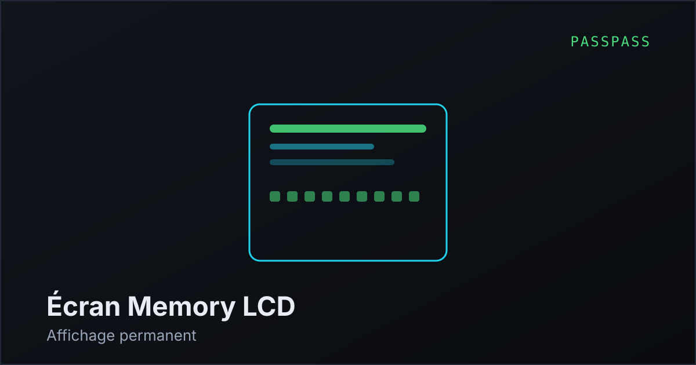
La première fiche technique annonçait un écran couleur de 1,5 pouce en 320 × 320 pixels, et une
autonomie de plusieurs semaines. Ces deux lignes étaient incompatibles, et il a fallu en sacrifier une.
Un panneau AMOLED de cette catégorie consomme quelques dizaines de milliampères dès qu'il est
allumé. Sur une batterie compatible avec un objet de poche, cela donne une autonomie qui se compte
en jours — c'est précisément pour cette raison que les montres connectées se rechargent tous les
deux soirs. Promettre des semaines aurait été un mensonge que le premier utilisateur aurait
constaté dans la semaine suivant la livraison.
Nous sommes passés à une technologie Memory-in-Pixel : chaque pixel embarque un
bit de mémoire et conserve son état sans rafraîchissement. La consommation au repos tombe aux
alentours de 100 microampères, soit plusieurs centaines de fois moins. La contrepartie est réelle :
64 couleurs au lieu de plusieurs millions, et pas de rétroéclairage.
Ce qui n'était au départ qu'un compromis subi s'est révélé être un meilleur produit. Un affichage
permanent ne coûtant presque rien en énergie, le boîtier peut laisser la demande d'autorisation
affichée en continu, au lieu de l'éteindre après dix secondes pour économiser la batterie.
Sur un appareil dont la fonction de sécurité consiste précisément à vous montrer ce que vous
validez, éteindre l'écran était une aberration que nous n'avions pas vue.
Nous avons aussi retenu une liaison SPI plutôt que MIPI. Le MIPI impose un processeur applicatif
nettement plus puissant, donc une surface d'attaque plus large et une consommation supérieure. En
SPI, l'écran est piloté directement par le microcontrôleur sécurisé. Puisque l'affichage du domaine
est la fonction de sécurité, il aurait été absurde de la déléguer à un module tiers
exécutant son propre firmware, que nous n'aurions pas pu auditer.
À lire ensuite : pourquoi l'écran vaut mieux qu'un contrôle antihameçonnage, ou la fiche technique complète du boîtier.
Sécurité · 5 min de lecture
Un écran vaut mieux qu'un contrôle antihameçonnage
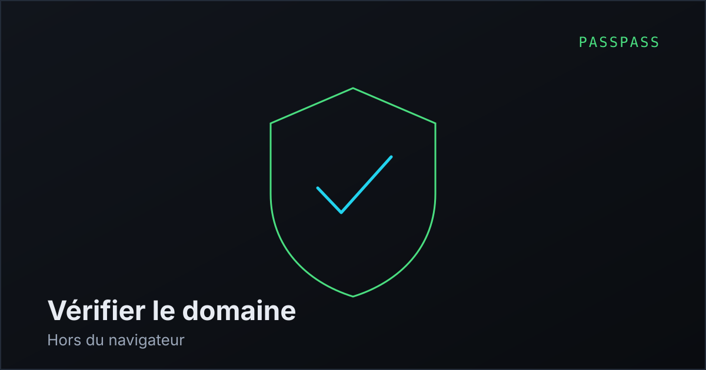
Les gestionnaires de mots de passe modernes refusent de remplir un formulaire si le domaine ne
correspond pas à celui enregistré. C'est une excellente protection, et elle bloque la grande
majorité des tentatives d'hameçonnage. Elle repose pourtant sur une hypothèse : que le navigateur
dise la vérité sur la page affichée.
Cette hypothèse tombe dès que la machine est compromise. Une extension malveillante, un proxy
local, un navigateur modifié : plusieurs voies permettent de fausser ce que le gestionnaire croit
voir. La vérification et la chose vérifiée s'exécutent alors dans le même environnement, contrôlé
par l'attaquant. C'est une faiblesse structurelle, pas un défaut d'implémentation.
Un écran physique change la nature du problème. Le boîtier reçoit le domaine, l'affiche sur son
propre matériel et attend. L'attaquant peut mentir au navigateur autant qu'il veut, il ne contrôle
pas ces pixels-là. La décision finale revient à un humain qui lit une information hors du système
compromis.
Nous ne prétendons pas que c'est infaillible. Un utilisateur pressé validera sans lire — c'est
d'ailleurs le mode d'échec principal de tous les dispositifs à confirmation. Cela explique le
soin apporté à l'affichage : domaine en entier, jamais tronqué, taille de police suffisante, et
mise en évidence de la partie du nom qui compte réellement.
Il faut le dire clairement : sur ce point précis, une clé FIDO2 ordinaire offre une protection
équivalente, voire supérieure, car la vérification du domaine est faite par la machine et non par
l'œil humain. La différence est qu'une clé FIDO2 ne fonctionne que sur les sites qui l'implémentent —
aujourd'hui une minorité. PassPass couvre les deux mondes : FIDO2 là où il existe, vérification
visuelle partout ailleurs.
Voir aussi : les passkeys et FIDO2, et le comparatif des modèles de menace.
Chaîne d'approvisionnement · 7 min de lecture
Choisir un élément sécurisé quand on refuse de signer un accord de confidentialité
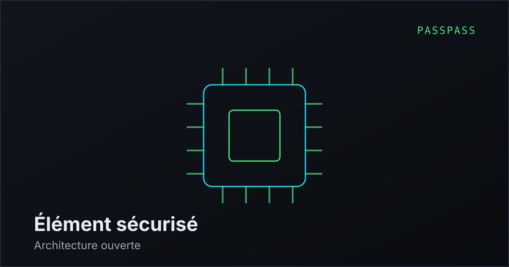
L'élément sécurisé est la pièce qui porte l'ensemble de la promesse : une puce dédiée, isolée du
processeur principal, conçue pour résister aux attaques physiques et par canaux auxiliaires. Les
références du secteur — ST33, NXP SE050, Infineon OPTIGA, Samsung S3D350 — sont excellentes et
certifiées EAL6+.
Elles posent un problème auquel nous ne nous attendions pas. La plupart de ces
certifications s'accompagnent d'un accord de confidentialité : le fabricant du produit
final s'engage à ne pas divulguer certains détails d'implémentation. Difficile de promettre un
firmware auditable et des compilations reproductibles tout en ayant signé l'engagement de taire
une partie du fonctionnement.
S'ajoute une contrainte prosaïque : ces composants s'achètent en volume, avec des engagements
commerciaux qu'une première série ne permet pas d'absorber.
Nous nous orientons vers le TROPIC01 de Tropic Square, premier élément sécurisé
à architecture ouverte et auditable, bâti sur RISC-V, disponible sans accord de
confidentialité et distribué à l'unité par les revendeurs de composants classiques. Le choix
n'est pas gratuit : ce composant est nettement plus récent que les puces de sécurité éprouvées
depuis vingt ans dans les cartes bancaires, et il n'a pas encore l'historique d'attaques publiées
qui fait la confiance dans ce domaine.
Nous assumons cet arbitrage. Un composant vérifiable dont on peut lire l'architecture nous paraît
préférable à un composant plus éprouvé dont il faut croire le constructeur sur parole — d'autant
que la vérifiabilité est exactement ce que nous vendons. Nous documenterons ce choix, et nous
reviendrons dessus s'il s'avère mauvais.
Sur le même sujet : ce que garantit un firmware open source et la question de la fabrication.
Modèle économique · 4 min de lecture
Pourquoi il n'y aura pas d'abonnement
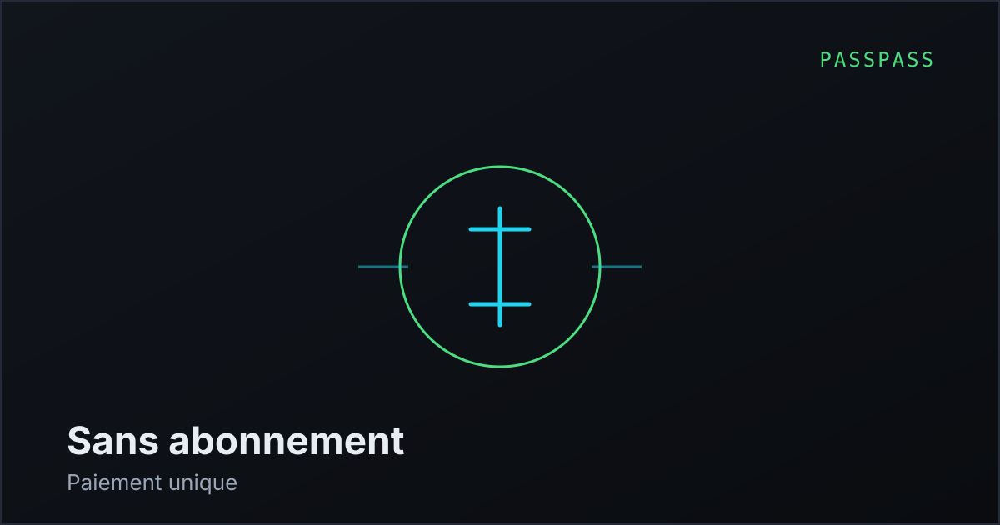
L'abonnement est le modèle dominant du secteur, et il se défend : revenus prévisibles,
développement continu, support financé. Nous avons choisi le paiement unique, et il vaut mieux
exposer les deux faces de cette décision.
La raison principale n'est pas commerciale, elle découle de l'architecture. PassPass ne nécessite
aucun serveur pour fonctionner : pas de synchronisation en ligne, pas de compte, pas de coffre
hébergé. Nous n'avons donc aucun coût récurrent par utilisateur à couvrir. Facturer un abonnement
pour un service qui ne consomme rien reviendrait à faire payer une rente.
La conséquence est plus intéressante que la cause. Puisque aucun serveur n'est nécessaire,
nous n'avons techniquement pas les moyens de désactiver votre appareil. Pas de
vérification de licence, pas d'activation, aucun interrupteur distant. Si l'entreprise disparaissait,
votre boîtier continuerait de fonctionner exactement comme la veille, et votre sauvegarde resterait
lisible avec l'outil de restauration publié en source ouverte. Aucun éditeur par abonnement ne peut
formuler cette promesse.
Le risque, lui, pèse sur nous. Sans revenu récurrent, une erreur d'estimation sur le coût de
production ne se rattrape pas : chaque client ne paie qu'une fois. C'est la raison pour laquelle
nous n'annonçons aucune date de livraison avant d'avoir les devis d'industrialisation en main, et
pourquoi nous préférons décaler que promettre à vide.
Détail des coûts sur dix ans dans le comparatif tarifaire, et sur la page tarifs.
Biométrie · 5 min de lecture
Ce qu'une empreinte protège, et ce qu'elle ne protège pas
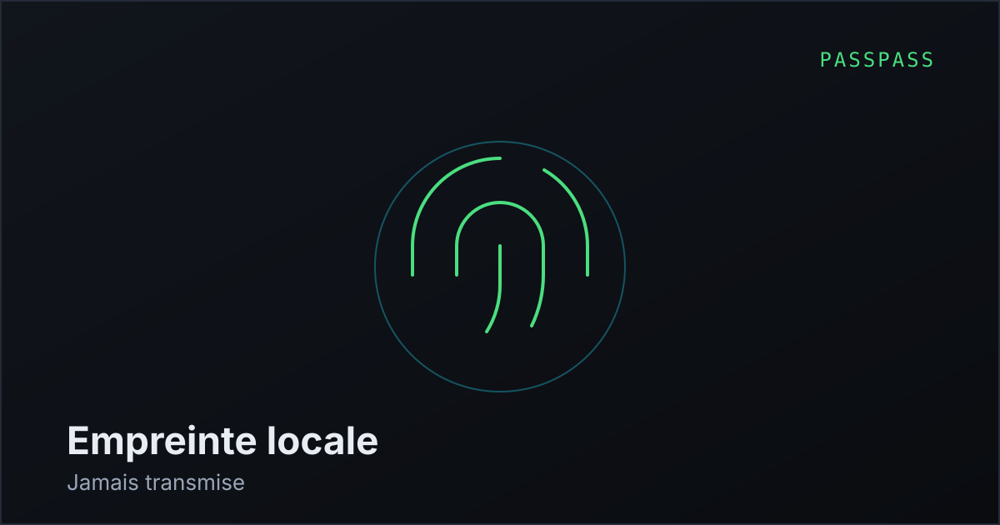
La biométrie est souvent présentée comme le remplacement définitif du mot de passe. C'est une
simplification qui mène à de mauvaises décisions de sécurité, et nous préférons décrire
précisément ce que le capteur de PassPass apporte.
Une empreinte digitale n'est pas un secret. Vous la laissez sur tout ce que vous touchez, elle est
photographiable, et surtout elle ne peut pas être changée après une compromission.
C'est pourquoi le gabarit ne quitte jamais l'élément sécurisé du boîtier : il n'est transmis ni à
l'ordinateur, ni à un service en ligne, ni à nous. Nous n'avons aucune infrastructure capable de le
recevoir, et c'est délibéré.
Ce que l'empreinte apporte réellement, c'est la présence. Elle atteste qu'un être humain
se trouve devant l'appareil au moment de la validation. C'est exactement ce qui manque à un
gestionnaire logiciel : un logiciel malveillant peut rejouer un mot de passe maître intercepté, il
ne peut pas fabriquer un doigt sur un capteur. La biométrie n'est pas ici un facteur de
connaissance, c'est un facteur de présence physique.
Ses limites doivent être dites. Un capteur capacitif grand public n'est pas conçu pour résister à
un adversaire déterminé et outillé ; les contournements par moulage sont documentés depuis des
années sur toutes les technologies de ce type. Et aucune biométrie ne protège contre la contrainte
physique : quelqu'un qui vous force la main obtient votre doigt.
C'est pour cette raison que le PIN de secours n'est pas un simple filet de sécurité en cas de
panne, mais un choix d'architecture. Il garantit que le doigt n'est jamais l'unique chemin d'accès —
ni pour vous, ni pour quelqu'un qui vous le prendrait.
Lié : la récupération du coffre et les avantages du boîtier.
Conception matérielle · 6 min de lecture
Le titane est un choix esthétique, pas un choix de sécurité
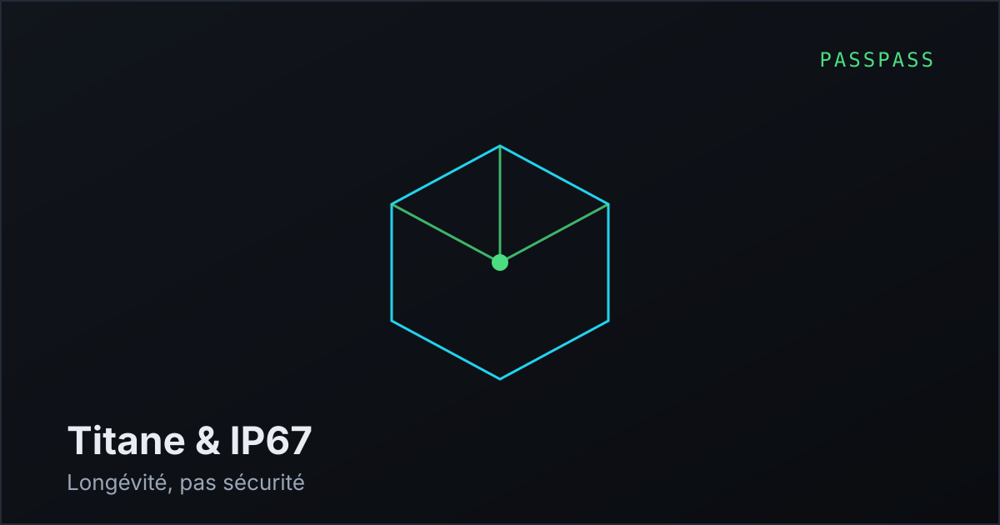
Un boîtier en titane grade 5 usiné dans la masse, c'est agréable à annoncer et agréable à tenir.
Il faut cependant être honnête sur ce que cela apporte : presque rien en matière de
sécurité. Un attaquant équipé d'un laboratoire ne sera pas arrêté par le métal du
boîtier — il attaquera la puce, pas la coque. La résistance aux attaques physiques vient de
l'élément sécurisé, pas de l'enveloppe.
Ce que le titane apporte réellement : il ne se déforme pas, ne se raye pas au fond d'une poche,
ne devient pas cassant avec le temps, et permet une étanchéité durable parce qu'un bloc usiné
n'a pas de coque collée qui se décolle au bout de trois ans. Pour un objet censé accompagner
quelqu'un pendant dix ans, c'est défendable. Mais c'est un argument de longévité, pas de sécurité,
et nous ne le présenterons pas autrement.
C'est aussi, de loin, le poste de coût le plus contestable du projet. L'usinage titane en petite
série coûte plusieurs fois le prix d'un boîtier aluminium anodisé, pour un bénéfice fonctionnel
marginal. La question de le remplacer se posait sérieusement, et nous avions promis que la
décision serait annoncée ici. La voici : la première série sera en aluminium usiné
dans la masse, anodisation dure. Mêmes cotes, même étanchéité, même sécurité — la
protection n'a jamais résidé dans le métal — pour un tiers du coût, ce qui se retrouve dans
le prix de vente. Le titane survit sous la seule forme qui lui va : une édition limitée
numérotée — One Ti — pour ceux qui veulent le métal pour le plaisir du métal, à son vrai prix.
L'indice IP67 pose un problème plus intéressant. Deux ouvertures traversent l'enceinte étanche :
le port USB-C et le capteur d'empreinte. Le capteur se scelle correctement. Le port, lui, est le
point dur classique de toute certification d'étanchéité. Deux voies s'offrent à nous — un
connecteur nativement étanché avec joint, ou la suppression pure et simple du port au
profit d'une recharge sans fil.
La seconde option est tentante bien au-delà de l'étanchéité : plus de port, c'est une interface
physique de moins par laquelle attaquer l'appareil, et l'élimination complète des attaques par
câble malveillant. Une contrainte d'industrialisation qui se transforme en argument de sécurité,
c'est assez rare pour être signalé.
Suite logique : l'industrialisation et le choix de la radio.
Industrialisation · 8 min de lecture
Fabriquer en Asie quand on vend de la confiance
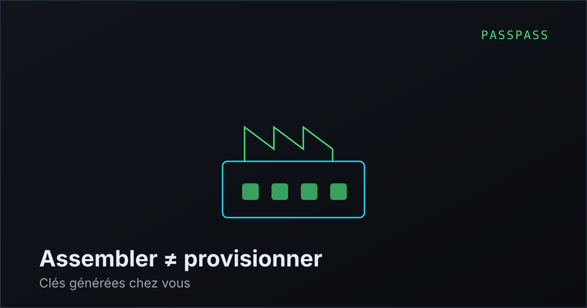
Posons le problème sans détour : la quasi-totalité de l'électronique grand public est assemblée
en Chine, et les rares acteurs qui font autrement le font à un coût considérable. Ledger fabrique
en France, Trezor en République tchèque, et tous deux le mettent en avant comme un argument
commercial central. Nous n'avons pas, à ce stade, les volumes qui rendraient cette voie
envisageable.
La question qui nous sera posée dès la première publication publique est donc légitime : pourquoi
faire confiance à un appareil de sécurité assemblé par un tiers, dans un pays où l'on ne contrôle
pas la chaîne ? Répondre « nos partenaires sont sérieux » ne suffit pas, et ne devrait convaincre
personne.
La réponse tient dans une distinction : assembler n'est pas provisionner. Un
assembleur monte des composants sur une carte. Il n'a aucune raison légitime de générer des clés,
de charger un firmware final ou de connaître le moindre secret. Le risque documenté sur ce type
de produit est précisément l'altération pendant la fabrication — et il ne se traite pas par la
confiance, mais par l'architecture.
Ce que nous nous engageons à faire : les cartes arrivent vierges. Le firmware final est
compilé et signé chez nous, avec notre propre clé, et chargé lors d'une étape de provisionnement
distincte de l'assemblage. Les clés de l'appareil
sont générées par l'élément sécurisé lui-même, au premier démarrage, chez l'utilisateur — elles
n'existent nulle part avant. Un démarrage sécurisé refuse tout firmware non signé par nous, et
l'appareil peut attester de la version qu'il exécute.
Cette architecture a une propriété qui nous plaît : elle ne demande pas de nous croire. Un
assembleur malveillant qui remplacerait un composant produirait un appareil incapable de passer
l'attestation. Le contrôle ne repose pas sur notre bonne foi, mais sur une vérification que
n'importe qui peut reproduire.
Reste une limite que nous ne pouvons pas contourner : une altération matérielle profonde, au
niveau du silicium, échapperait à ces contrôles. C'est vrai de tous les produits du marché, y
compris ceux fabriqués en Europe, dont les puces viennent de toute façon d'Asie. Quiconque prétend
le contraire vend du confort intellectuel.
Complément indispensable : compilation reproductible et attestation.
Sécurité · 5 min de lecture
Le Bluetooth est notre maillon faible, et nous l'avons gardé quand même
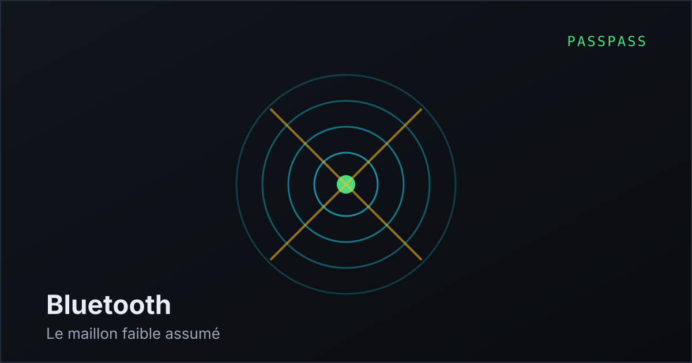
Toute liaison sans fil est une surface d'attaque supplémentaire. Le Bluetooth a un historique de
vulnérabilités qui n'incite pas à l'enthousiasme, et un appareil de sécurité sans radio est
indiscutablement plus sûr qu'un appareil qui en possède une. Trezor est allé jusqu'à installer un
interrupteur physique de coupure sur son modèle le plus récent, ce qui en dit long sur le
consensus du secteur.
Nous avons conservé le Bluetooth pour une raison simple : sans lui, l'appareil est inutilisable
sur téléphone, et un gestionnaire de mots de passe qui ne fonctionne pas en mobilité ne sert
pas à grand-chose. C'est un arbitrage entre sécurité et existence commerciale, et nous préférons
le formuler ainsi plutôt que de prétendre qu'il n'y a pas de compromis.
Ce que nous faisons pour limiter les dégâts. La radio ne transporte jamais de
secret en clair : le canal Bluetooth ne sert qu'à transmettre la demande — quel domaine, quel
compte — et à recevoir la réponse. Le mot de passe lui-même est saisi par émulation de clavier,
chiffré de bout en bout entre le boîtier et l'appareil apparié, avec une clé négociée lors d'un
appairage confirmé sur l'écran du boîtier.
La radio reste éteinte par défaut et ne s'active que sur demande explicite. Surtout, la
compromission de la liaison ne suffit jamais : un attaquant qui contrôlerait entièrement le canal
radio pourrait déclencher une demande, mais elle s'afficherait sur l'écran et attendrait un doigt
qu'il n'a pas. La validation physique est la garantie qui rend le maillon faible acceptable.
Nous étudions l'ajout d'une coupure matérielle de la radio, à la manière de ce que fait Trezor.
Si le boîtier se passe finalement de port USB-C, cette décision devient plus délicate — on ne
peut pas retirer les deux.
Voir aussi : le port USB-C et l'étanchéité, et le comparatif matériel.
Transparence · 6 min de lecture
Ce que « firmware open source » garantit vraiment
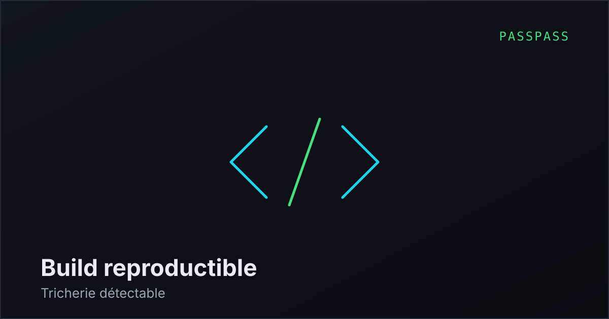
L'annonce d'un firmware en source ouverte est devenue un argument de vente presque obligatoire
sur ce marché. Elle est souvent comprise de travers, y compris par des acheteurs avertis, et il
vaut la peine de préciser ce qu'elle apporte et ce qu'elle n'apporte pas.
Publier le code source prouve une chose : ce que le programme est censé faire est
vérifiable par quiconque. Cela ne prouve pas que le code publié est celui qui tourne dans
l'appareil que vous avez acheté. Rien n'empêche techniquement un constructeur de publier un code
irréprochable et d'expédier un binaire différent.
Le maillon qui manque s'appelle la compilation reproductible : garantir qu'en
recompilant le code publié, sur une machine quelconque, on obtient un binaire strictement
identique, octet pour octet, à celui distribué. C'est ce qui transforme une promesse en
vérification. Sans elle, l'ouverture du code est un geste de bonne volonté, pas une garantie.
Nous nous y engageons, et nous nous engageons aussi sur le mécanisme qui la rend utile côté
utilisateur : l'appareil doit pouvoir attester de l'empreinte du firmware qu'il exécute,
pour que vous puissiez la comparer à celle que vous avez recompilée. Le triptyque code publié,
compilation reproductible, attestation matérielle forme un ensemble dont aucun élément ne vaut
grand-chose isolément.
Il faut nommer les limites. La partie matérielle de PassPass restera propriétaire sur cette
première série — nous publierons les schémas si le projet atteint une taille qui le permet, mais
promettre aujourd'hui ce que nous ne pouvons pas tenir serait exactement le travers que nous
reprochons aux autres. Et l'élément sécurisé, même choisi pour son architecture ouverte, contient
du silicium que personne ne peut inspecter chez soi.
L'ouverture n'est pas une preuve d'absence de porte dérobée. C'est un déplacement du problème :
il ne s'agit plus de nous faire confiance, mais de rendre la tricherie détectable. C'est moins
séduisant qu'une garantie absolue, et beaucoup plus solide.
En amont : le choix de l'élément sécurisé. En aval : la chaîne de fabrication.
Conception · 7 min de lecture
Perdre son boîtier : concevoir une récupération qui ne soit pas une porte dérobée
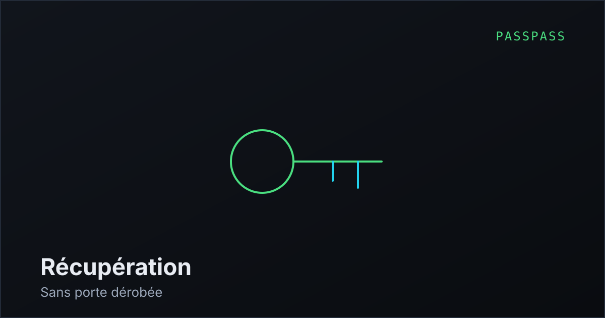
C'est la question qui revient systématiquement, et c'est la bonne : que se passe-t-il si l'appareil
est perdu, volé, détruit ? Elle met le doigt sur la tension centrale de tout système de ce type.
Une récupération trop facile est une porte dérobée. Une récupération impossible fabrique des
utilisateurs qui perdent définitivement l'accès à leur vie numérique.
La mauvaise réponse, très répandue, consiste à conserver une copie de secours côté éditeur. Elle
règle le problème de l'utilisateur en recréant exactement celui que le produit prétend éliminer :
un tiers détient de quoi reconstituer votre coffre, donc une cible existe, donc une contrainte
légale peut s'exercer sur ce tiers. Nous ne ferons pas cela.
Notre approche repose sur deux éléments distincts, tous deux entre vos mains. Une
sauvegarde chiffrée que vous exportez où vous voulez — disque, clé USB, service
en ligne, peu importe puisqu'elle est inexploitable sans le second élément. Et une
carte de récupération, remise avec l'appareil, portant le secret qui permet de
déchiffrer cette sauvegarde sur un nouveau boîtier.
Conséquence à assumer : si vous perdez la carte et l'appareil, vos données sont perdues.
Définitivement. Nous ne pouvons rien faire, et cette impuissance est la contrepartie exacte de la
promesse que nous n'avons aucun accès à vos données. Un service qui peut vous dépanner dans cette
situation est un service qui pouvait déjà lire votre coffre.
Cela explique aussi le Pack Duo, qui n'est pas un artifice commercial : deux boîtiers synchronisés
constituent la meilleure protection contre la perte, bien supérieure à n'importe quelle sauvegarde,
parce qu'elle ne demande aucune discipline. Le second appareil se met à jour tout seul et dort
dans un tiroir.
Nous travaillons encore sur la forme physique de la carte. Le papier est fragile, le métal gravé
est coûteux, et un support trop discret finit par être jeté par erreur. C'est un problème de
conception plus difficile qu'il n'y paraît, et les suggestions sont les bienvenues.
Lié : le PIN de secours et le Pack Duo.
Périmètre produit · 4 min de lecture
Pourquoi nous ne ferons pas de partage familial
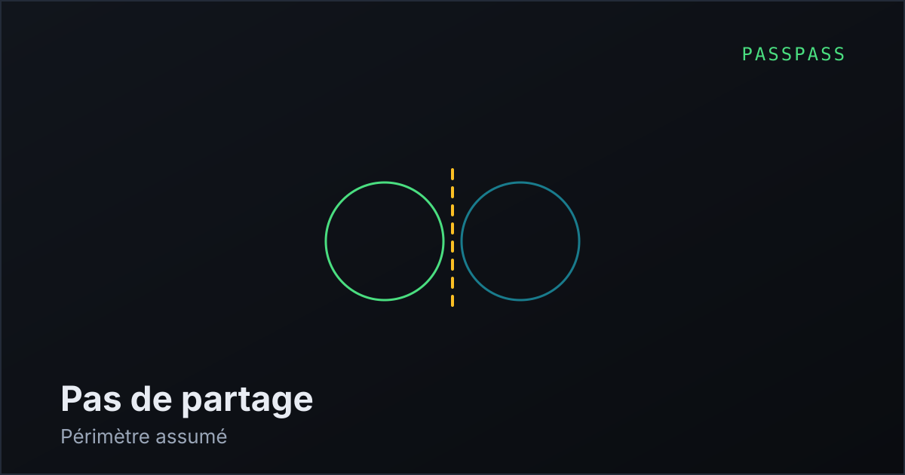
C'est la fonction la plus demandée dès qu'on présente le produit, et la réponse est non. Pas
« pas tout de suite » : non, par construction.
Partager un mot de passe entre plusieurs personnes suppose un canal par lequel le secret circule,
et un mécanisme qui décide qui a le droit d'y accéder. Autrement dit un service, des comptes, une
infrastructure. Tout ce que PassPass n'a délibérément pas, et dont l'absence constitue la totalité
de son intérêt. Ajouter le partage reviendrait à reconstruire un gestionnaire en ligne autour d'un
boîtier, en cumulant les inconvénients des deux approches.
Ce n'est pas un problème que nous refusons de résoudre par paresse : c'est un problème que
1Password et Bitwarden résolvent très bien, avec des équipes et une infrastructure que nous
n'aurons pas. Un produit qui prétend tout faire finit par mal faire l'essentiel.
L'usage que nous recommandons, y compris s'il nous vend moins d'appareils : gardez votre
gestionnaire actuel pour les dizaines de comptes partagés et sans enjeu — les abonnements vidéo,
le compte de la cantine scolaire, les identifiants familiaux. Confiez au boîtier la poignée
d'accès dont la compromission serait grave : messagerie principale, banque, accès administrateur,
portefeuilles. Ces deux outils ne se concurrencent pas.
Le verdict du comparatif détaille quand rester sur un gestionnaire logiciel.
Prospective · 6 min de lecture
Les passkeys vont-elles rendre ce produit inutile ?
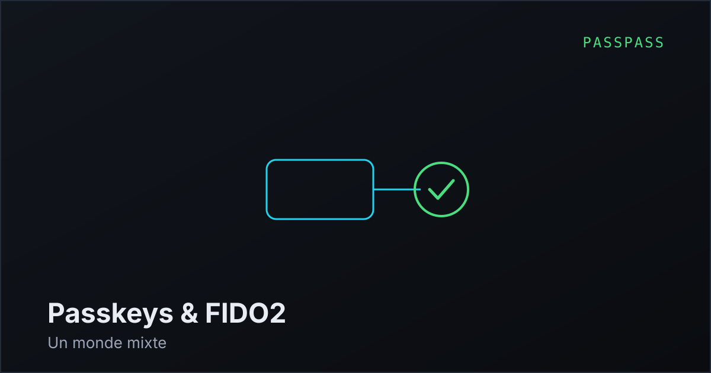
La question mérite d'être posée franchement, parce qu'elle porte sur la pertinence même du projet.
Apple, Google et Microsoft poussent activement les passkeys, une authentification sans mot de
passe fondée sur la cryptographie à clé publique. Si les mots de passe disparaissent, à quoi sert
un gestionnaire de mots de passe matériel ?
D'abord, un constat de calendrier. Les mots de passe ne disparaîtront pas dans cette décennie. Il
subsiste des dizaines de millions de sites, d'applications métier, d'équipements réseau,
d'interfaces d'administration et de systèmes anciens qui ne migreront jamais. Le secteur bancaire
et l'administration avancent lentement pour de bonnes raisons. Quiconque a maintenu un parc
informatique réel sait que la couche héritée ne meurt pas, elle s'accumule.
Ensuite, un point souvent négligé : une passkey est un secret comme un autre.
Elle doit être stockée, sauvegardée, synchronisée. Aujourd'hui, elle vit le plus souvent dans le
trousseau iCloud ou le gestionnaire de mots de passe Google — c'est-à-dire chez un tiers, sur un
appareil dont vous ne contrôlez pas entièrement le système. Le problème n'a pas disparu, il a
changé de nom.
PassPass est justement un endroit où stocker des passkeys hors du système d'exploitation, avec
validation physique à chaque usage. C'est pourquoi l'appareil implémente FIDO2 et WebAuthn dès la
première série : non pas comme une fonction annexe, mais parce que c'est probablement l'usage
dominant dans dix ans.
Notre lecture, qui peut se révéler fausse : le monde qui vient n'est pas « sans mot de passe »,
il est mixte, durablement. Passkeys sur les grands services, mots de passe partout
ailleurs, codes à usage unique en transition. Un appareil qui ne gérerait que l'un des trois
serait mal armé. Nous préférons parier sur la coexistence que sur la disparition annoncée.
À relire : l'écran face à l'hameçonnage et le comparatif complet.
Les prochaines notes porteront sur l'industrialisation : devis d'assemblage, arbitrage final sur
le boîtier et parcours de certification.
Réserver un PassPass